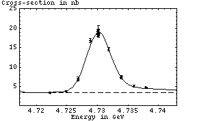
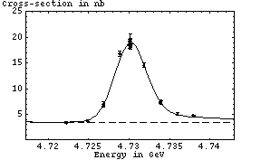

Upsilon Scans: 01/16/02 Online Fit
Fit parameters:
Chi^2 / dof = 12.50 / 14 = 0.8925 |  |
Fit parameters:
Chi^2 / dof = 12.50 / 14 = 0.8925 |  |
This doesn't have continuum data yet. Continuum data for the Y(1s) will be particularly interesting because it is guaranteed not to have any contribution from high-energy tails from lower-energy peaks.

 2.3 MeV nb
2.3 MeV nb